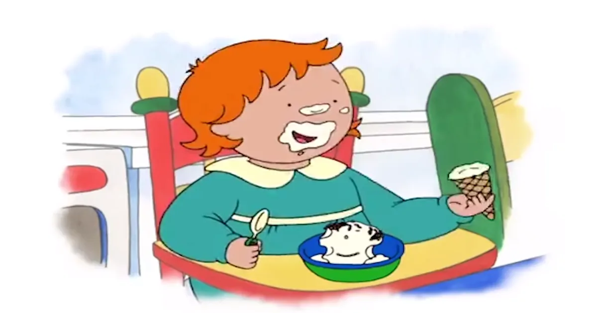

アニメで英語学習！Caillouとマイルドドラッグ
 Caillou’s Favourite Plate | Caillou Cartoon - YouTube
妹のロージーに大人と同じ量のアイスクリームを与えている。砂糖はマイルドドラッグだ。このままロージーが成長すると肥満体型になることは明らかだ。
カイユーが公園で遊んでいるとアイスクリーム売りが通りかかる。買ってほしいと母親にせがむ。ロージーがゆっくりと遊具から降りるのところを母親は見守っている。その間にアイスクリーム売りは去ってしまう。カイユーは腹を立てる。母親になだめられるもその場から走り去る。
I’m sorry we missed it. Maybe we’ll see it some other time.
アイスクリームはマイルドドラッグだ。食べられる機会を逸して怒りを覚えるのは禁断症状だ。毎日大量の砂糖を摂取しているのではないか。カイユーはまだ4歳である。
帰宅したカイユーが落ちこんでいることに気がついた父親が声をかける。父親は作業の手を止めて自宅でアイスクリームを作ることにする。
I have an idea. Let me put this away and I’ll be with you in a minute.
カイユーがコーンとスプリンクルでピエロを模してアイスクリームに盛り付ける。ロージーはこの超加工食品に夢中である。顔中をアイスクリームまみれにしているがスプーンは器用に使う。口に運ぶ手を止めない。ロージーはまだ2歳だ。
She is Caillou’s 2 year old sister. She is also the daughter of Boris and Doris and the granddaughter of Rosemary and Hadley.
子供がマイルドドラッグのとりこになったのは親のせいである。ボリスとドリスが自分たちの食生活に無頓着なのだ。この夫婦が太り気味なのも食生活の乱れを表している。